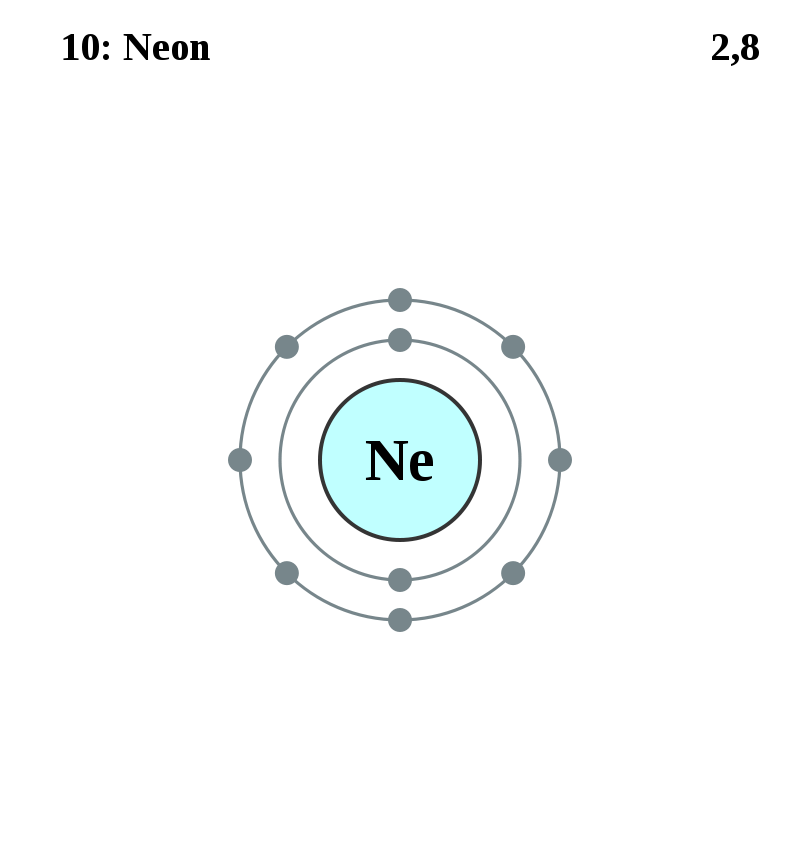

Basic Information about the element
Basic Information about the element
Name: Neon
Symbol: Ne
Atomic Number: 10

1s2 2s2 2p6
The chemical element neon is classed as a noble gas and a nonmetal.
It was discovered in 1898 by William Ramsay and Morris Travers.
| Number of Protons/Electrons: | 10 |
| Number of Neutrons: | 10 |
| Atomic Mass: | 20.1797 amu |
| Melting Point: | -248.6 °C (24.549994 K, -415.48 °F) |
| Boiling Point: | -246.1 °C (27.049994 K, -410.98 °F) |
| Classification: | Noble Gas |
| Uses: | lighting |